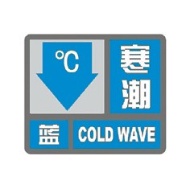
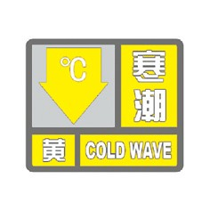
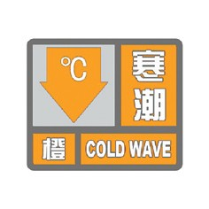
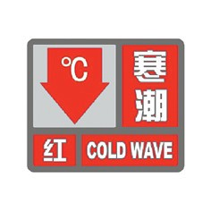

寒潮预警信号分四级，分别以蓝色、黄色、橙色、红色表示。
（一）寒潮蓝色预警信号

标准：48小时内最低气温将要下降8℃以上，最低气温小于等于4℃，陆地平均风力可达5级以上；或者已经下降8℃以上，最低气温小于等于4℃，平均风力达5级以上，并可能持续。
防御指南：1.政府及有关部门按照职责做好防寒潮准备工作；2.注意添衣保暖；3.对热带作物、水产品采取一定的防护措施；4.做好防风准备工作。
（二）寒潮黄色预警信号

标准：24小时内最低气温将要下降10℃以上，最低气温小于等于4℃，陆地平均风力可达6级以上；或者已经下降10℃以上，最低气温小于等于4℃，平均风力达6级以上，并可能持续。
防御指南：1.政府及有关部门按照职责做好防寒潮工作；2.注意添衣保暖，照顾好老、弱、病人；3.对牲畜、家禽和热带、亚热带水果及有关水产品、农作物等采取防寒措施；4.做好防风工作。
（三）寒潮橙色预警信号

标准：24小时内最低气温将要下降12℃以上，最低气温小于等于0℃，陆地平均风力可达6级以上；或者已经下降12℃以上，最低气温小于等于0℃，平均风力达6级以上，并可能持续。
防御指南：1.政府及有关部门按照职责做好防寒潮应急工作；2.注意防寒保暖；3.农业、水产业、畜牧业等要积极采取防霜冻、冰冻等防寒措施，尽量减少损失；4.做好防风工作。
（四）寒潮红色预警信号

标准：24小时内最低气温将要下降16℃以上，最低气温小于等于0℃，陆地平均风力可达6级以上；或者已经下降16℃以上，最低气温小于等于0℃，平均风力达6级以上，并可能持续。
防御指南：1.政府及相关部门按照职责做好防寒潮的应急和抢险工作；2.注意防寒保暖；3.农业、水产业、畜牧业等要积极采取防霜冻、冰冻等防寒措施，尽量减少损失；4.做好防风工作。